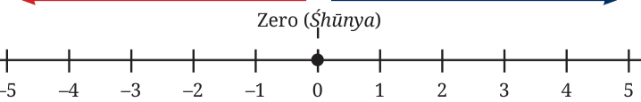

Brahmagupta did not stop at zero. He realised that if subtraction of a number from itself can result in zero \((5 - 5 = 0)\), then what would happen if we subtracted a larger number from a smaller one \((3 - 5 =\) )? To answer this, Brahmagupta grounded his mathematics in the reality of commerce and life. He recognised two states:
- •Fortunes (Dhana): Positive numbers, representing wealth or assets.
- •Debts (Ṛiṇa): Negative numbers, representing debts.
By moving to the left of zero on the number line, Brahmagupta formally introduced Negative Numbers to the world. The combination of positive natural numbers, their negative counterparts, and zero creates the set of Integers, denoted by the symbol Z (from the German word Zahlen, meaning numbers).
Negative Integers ← Debt (Ṛiṇa) Fortunes (Dhana) \(\to\) Positive Integers

\(- 5 - 4 - 3 - 2 - 1\)
3.3.1 The Arithmetic of Integers
Brahmagupta gave explicit rules for adding and multiplying these integers, which we still use exactly as he wrote them over 1,300 years ago:
- 1.A fortune plus a fortune is a fortune: \(5 + 4 = 9\).
- 2.A debt plus a debt is a debt: ( \(- 5) +\) ( \(- 4) = - 9\). (If you owe `5 and
borrow `4 more, you owe ` 9.)
- 3.A fortune minus zero is a fortune, a debt minus zero is a debt:
\(7 - 0 = 7\), and \(- 6 - 0 = - 6\).
- 4.The product of a debt and a fortune is a debt: ( \(- 3) \times 4 = - 12\).
(If you take on 4 debts of `3, your total debt is `12.)
- 5.The product of two debts is a fortune: ( \(- 3) \times\) ( \(- 4) = 12\).
Think and Reflect
Why does a negative times a negative equal a positive? Think of it in terms of action and debt. If a negative number represents a debt, then multiplying by a negative number represents the removal of that debt. (Hint: If someone takes away ( - ) four of your debts that are each worth `3 (that is, \(- 3)\), you are effectively `12 richer! Therefore,
( \(- 3) \times\) ( \(- 4) = +12.)\)
Exercise Set 3.2
- 1.The temperature in the high-altitude desert of Ladakh is recorded
as \(4 ^{\circ} C\) at noon. By midnight, it drops by \(15 ^{\circ} C\). What is the midnight temperature?
- 2.A spice trader takes a loan (debt) of `850. The next day, he makes
a profit (fortune) of `1,200. The following week, he incurs a loss of `450. Write this sequence as an equation using integers and calculate his final financial standing.
- 3.Calculate the following using Brahmagupta’s laws:
- (i)( \(- 12) \times 5\) (ii) ( \(- 8) \times\) ( \(- 7)\)
- (iii)\(0 -\) ( \(- 14)\) (iv) ( \(- 20) \div 4\)
- 4.Explain, using a real-world example of debt, why subtracting
a negative number is the same as adding a positive number
(e.g., \(10 -\) ( \(- 5) = 15)\).
3.4 Filling the Spaces: Fractions and Rational Numbers
As society grew more complex, measuring became just as important as counting. If a farmer divides a field of wheat among his three children, how much does each get? If a recipe calls for half a cup of ghee, how do we represent that mathematically? Numbers that represent parts of a whole are called fractions. Just as every natural number has an additive inverse (3 has \(- 3\), 19 has \(- 19\), etc.), we can conceive of additive inverses for every positive fraction: \(- \frac{3}{4}\) for \(\frac{3}{4}\) , \(- \frac{19}{7}\) for \(\frac{19}{7}\) , etc. Let us refer to such additive inverses of positive